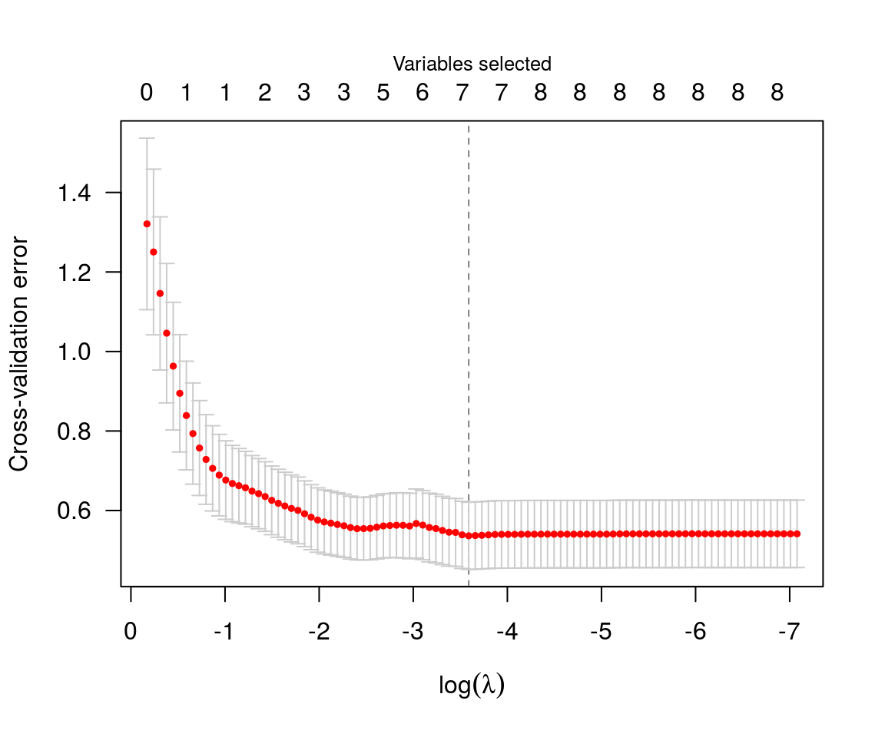

Getting started with ncvreg
Patrick Breheny
Source:vignettes/getting-started.rmd
getting-started.rmdncvreg is an R package for fitting regularization paths for linear regression, GLM, and Cox regression models using lasso or nonconvex penalties, in particular the minimax concave penalty (MCP) and smoothly clipped absolute deviation (SCAD) penalty, with options for additional L2 penalties (the “elastic net” idea). Utilities for carrying out cross-validation as well as post-fitting visualization, summarization, inference, and prediction are also provided.
This vignette offers a brief introduction to the basic use of ncvreg. For more details on the package, visit the ncvreg website at http://pbreheny.github.io/ncvreg. For more on the algorithms used by ncvreg, see the original article:
For more about the marginal false discovery rate idea used for post-selection inference, see
- Breheny P (to appear). Marginal false discovery rates for penalized regression models. Biostatistics
ncvreg comes with a few example data sets; we’ll look at Prostate, which has 8 features and one continuous response, the PSA levels (on the log scale) from men about to undergo radical prostatectomy:
To fit a penalized regression model to this data:
The default penalty here is the minimax concave penalty (MCP), but SCAD and lasso penalties are also available. This produces a path of coefficients, which we can plot with

Notice that variables enter the model one at a time, and that at any given value of \(\lambda\), several coefficients are zero. To see what the coefficients are, we could use the coef function:
coef(fit, lambda=0.05)
# (Intercept) lcavol lweight age lbph svi
# 0.35121089 0.53178994 0.60389694 -0.01530917 0.08874563 0.67256096
# lcp gleason pgg45
# 0.00000000 0.00000000 0.00168038The summary method can be used for post-selection inference:
summary(fit, lambda=0.05)
# MCP-penalized linear regression with n=97, p=8
# At lambda=0.0500:
# -------------------------------------------------
# Nonzero coefficients : 6
# Expected nonzero coefficients: 2.51
# Average mfdr (6 features) : 0.418
#
# Estimate z mfdr
# lcavol 0.53179 8.880 < 1e-04
# svi 0.67256 3.945 0.0018967
# lweight 0.60390 3.666 0.0050683
# lbph 0.08875 1.928 0.4998035
# age -0.01531 -1.788 1.0000000
# pgg45 0.00168 1.160 1.0000000In this case, it would appear that lcavol, svi, and lweight are clearly associated with the response, even after adjusting for the other variables in the model, while lbph, age, and pgg45 may be false positives included simply by chance.
Typically, one would carry out cross-validation for the purposes of assessing the predictive accuracy of the model at various values of \(\lambda\):

The value of \(\lambda\) that minimizes the cross-validation error is given by cvfit$lambda.min, which in this case is 0.028. Applying coef to the output of cv.ncvreg returns the coefficients at that value of \(\lambda\):
coef(cvfit)
# (Intercept) lcavol lweight age lbph
# 0.494151714 0.569546490 0.614419845 -0.020913442 0.097352556
# svi lcp gleason pgg45
# 0.752400486 -0.104960299 0.000000000 0.005324462Predicted values can be obtained via predict, which has a number of options:
predict(cvfit, X=head(X)) # Prediction of response for new observations
# 1 2 3 4 5 6
# 0.8304032 0.7650898 0.4262070 0.6230109 1.7449493 0.8449584
predict(cvfit, type="nvars") # Number of nonzero coefficients
# 0.02762
# 7
predict(cvfit, type="vars") # Identity of the nonzero coefficients
# lcavol lweight age lbph svi lcp pgg45
# 1 2 3 4 5 6 8Note that the original fit (to the full data set) is returned as cvfit$fit; it is not necessary to call both ncvreg and cv.ncvreg to analyze a data set. For example, plot(cvfit$fit) will produce the same coefficient path plot as plot(fit) above.